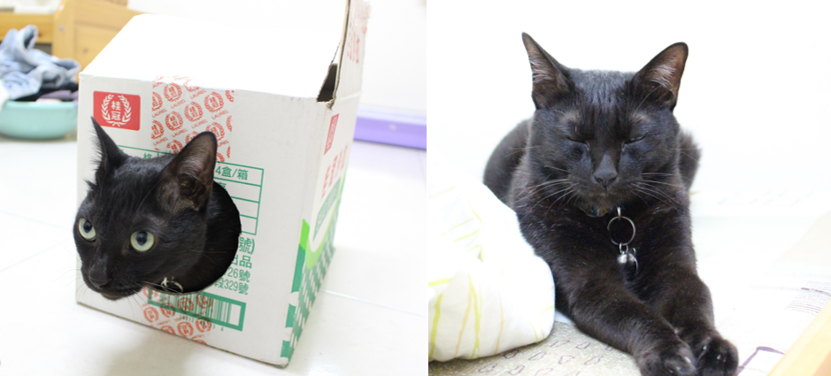
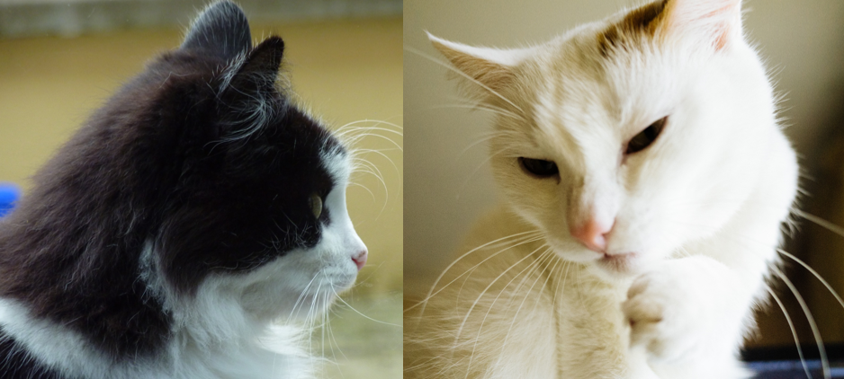
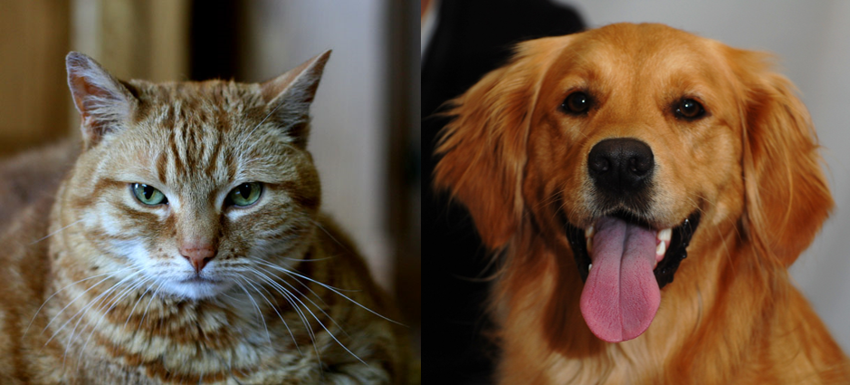
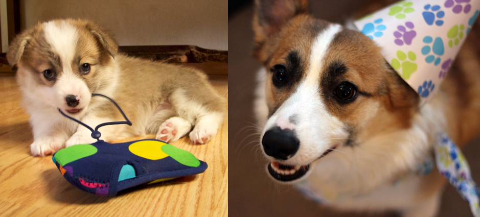
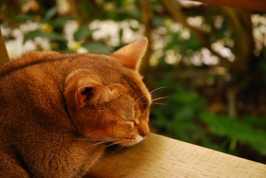
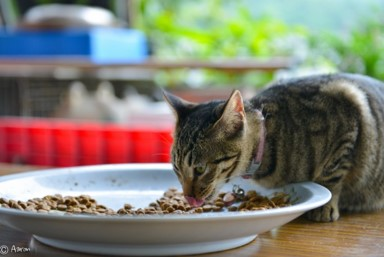
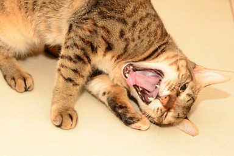
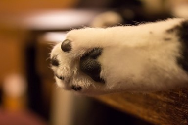

全國收容所
我要領養
首頁





貓咪心跳會依照年齡降低
貓咪的脈搏比人類快很多，每分鐘是160-240下不等，所以當你抱著他們時感到他們的心跳加速，別自以為他們是害臊啊！

狼吞虎嚥也沒關係
貓咪是沒有臼齒的，所以他們的犬齒是拿來撕裂食物的，如果你餵的食物不需要撕裂，自然就可以通通吞下去了！

貓咪喜歡用娃娃音
在面對貓奴時，貓咪喜歡用娃娃音跟我們溝通，同時表達親密。
但是在面對其他貓咪時，就會用大人的聲音囉！

肉球檢查貓咪有沒有發燒
因為肉球就是貓咪調節溫度的感覺器官，摸起來都是冰冰涼涼的。
如果摸到熱呼呼的貓肉球，那就有可能毛小孩是發燒了！